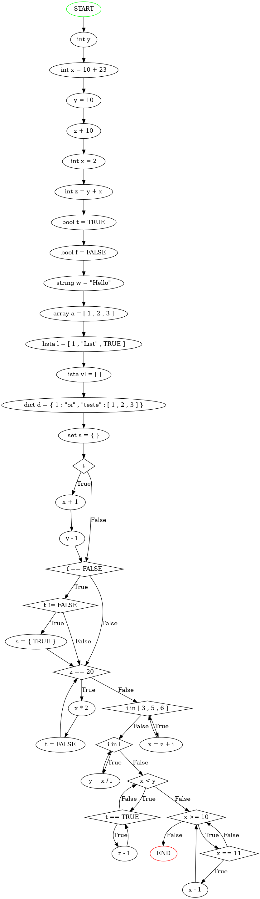

<h2>Código</h2><code>
int y; 

y = 5;

int x = 10 + 23; 
int z = y + x;


while(y < x) {while (z >= 20) { z=z-1; y=y+1;}; };
</code><h2>Tabela</h2><table border="1"><tr><th>vars</th><td><table border="1"><tr><th>y</th><td><table border="1"><tr><th>type</th><td>int</td></tr><tr><th>declaration?</th><td>True</td></tr><tr><th>redeclaration?</th><td>False</td></tr><tr><th>inicialization?</th><td>False</td></tr><tr><th>used</th><td>4</td></tr></table></td></tr><tr><th>x</th><td><table border="1"><tr><th>type</th><td>int</td></tr><tr><th>declaration?</th><td>True</td></tr><tr><th>redeclaration?</th><td>False</td></tr><tr><th>inicialization?</th><td>True</td></tr><tr><th>used</th><td>1</td></tr></table></td></tr><tr><th>z</th><td><table border="1"><tr><th>type</th><td>int</td></tr><tr><th>declaration?</th><td>True</td></tr><tr><th>redeclaration?</th><td>False</td></tr><tr><th>inicialization?</th><td>True</td></tr><tr><th>used</th><td>2</td></tr></table></td></tr></table></td></tr><tr><th>types</th><td><table border="1"><tr><th>int</th><td>3</td></tr></table></td></tr><tr><th>instructions</th><td><table border="1"><tr><th>assign</th><td>3</td></tr><tr><th>read_write</th><td>4</td></tr><tr><th>conditional</th><td>0</td></tr><tr><th>cycle</th><td>2</td></tr></table></td></tr><tr><th>errors</th><td><table border="1"><tr><th>redeclarations</th><td>0</td></tr><tr><th>not_declared</th><td>0</td></tr></table></td></tr><tr><th>nested_control</th><td>1</td></tr><tr><th>complex_ifs</th><td></td></tr></table><h2>Grafo</h2>